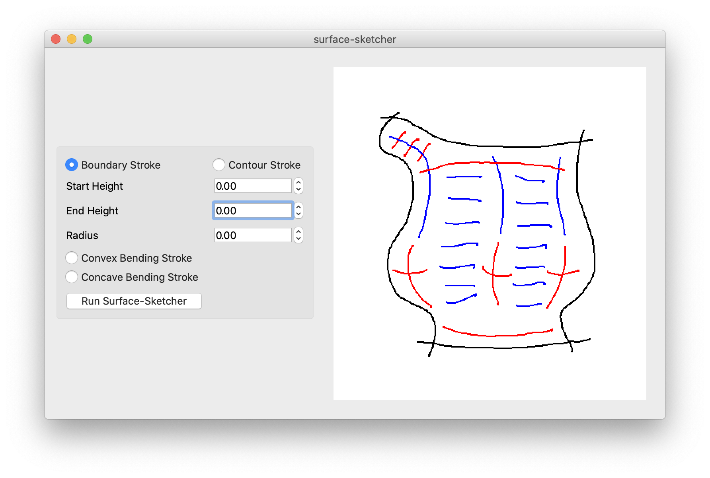
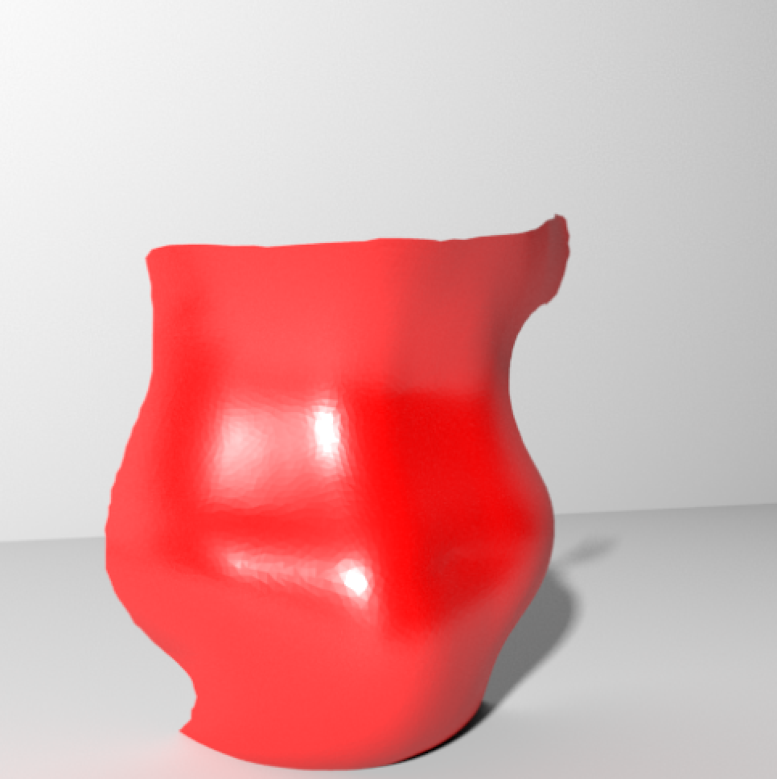
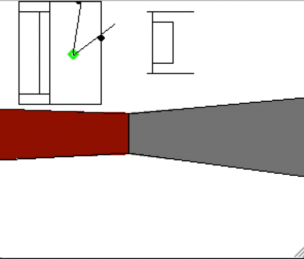

I am a master's student studying computer science at Brown University, and I am interested
in computer graphics, animation, video games, and film.
surface-sketcher
(Summer 2020)
This is a sketch-based modeling program based on the bendsketch paper by Li et al. This
was a personal project that I worked on over Summer 2020.
The program has a GUI on which the user can draw the boundary strokes, contour strokes, convex bending strokes, and concave bending strokes of a 3D surface. The program
optimizes a 3D surface described by the strokes, and the program outputs the surface as an obj file.


See the GitHub page for a detailed explanation of the surface-solving pipeline.
2.5DPortals
(Winter 2019)
This program is a first-person engine that uses PyGame to experiment with visible surface determination
algorithms common to first-person engines from the 90s like the Build Engine. The project takes in an
environment that is split up into convex sectors and then renders the far-away sectors before rendering the
near sectors. Splitting up an environment into sectors in this way allows for sectors to have portals to
other sectors. This can result in interesting visual tricks as seen below. In the big room, the green and
red walls are far apart, but in the big room, the green and red walls are closer together.
